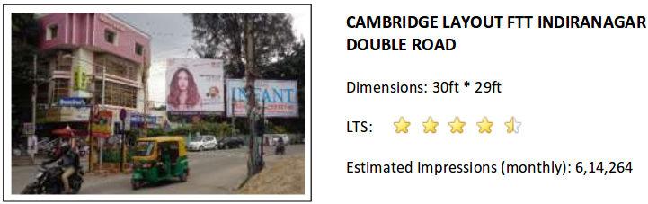
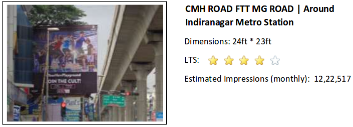

YLG Salon - Data Driven OOH Planning
YLG
The Customer
YLG is a women salon and spa chain with an online store based out of Bangalore. It offers innovative beauty services that women need for a complete couture look. In order to increase the brand awareness, retain visibility and footfalls to their stores, they had engaged in Billboard advertising at locations close to their stores.
When AdMAVIN reached out to them, YLG wanted to know if we could help them gauge the efficacy of their existing billboards and, if possible, suggest alternatives which might be more cost-effective.
The Requirements
Billboards serve as an excellent reminder medium, helping gain top-of-the-mind recall amongst customers when they are outside their homes. In the case of John Jacobs, they have opened stores in the commercial hubs of Indiranagar and Koramangala (where people often come with the purpose of shopping / hanging out with friends), and the purpose of the billboard advertisements was to increase footfalls to their stores.
The task at hand was to ensure that using our proprietary MAVIN platform, we needed to suggest billboards which would be more effective (in terms of visibility and therefore creating brand awareness) while ensuring that they are well within their stipulated budget.
YLG's campaign was conducted over 15+ billboards across the city. For the study purpose, we selected four billboards, one billboard in Indiranagar, one in Koramangala near Sony World signal, one in Jayanagar near Canara bank and one in Cambridge layout.
The Challenges
The customer segment of YLG is predominantly Sec-A and Sec-B women, who aspire for great looks. While suggesting better alternatives, we needed to ensure that the demographics of the target population of the billboards doesn't change.
At present, the billboards have been selected keeping the following aspects in mind -
- Presence on routes leading to the stores
- Distance of billboard to store < 2 km
- Apparent cost / Approximate views (the lower the better)
- General understanding of profile of public crossing those billboards
Analysis for YLG's Cambridge Layout Billboard
Present Billboard
Proposed Alternatives
MAVIN Advantage
Our analysis on identify better alternatives in Indiranagar
Comparison of No. of Estimated Impressions for Indiranagar billboards
Comparison of CPM (Cost per thousand impressions) for Indiranagar billboards
As seen above, we see a significant (1.5x) increase in the No. of Impressions that would be garnered by the billboards suggested through the MAVIN platform as compared to the current billboard on which YLG is advertising at Indiranagar. We see that the CPM also increases by 1.02x. Also, comparison is not only dependent on the quantitative analysis, demographics also plays a hand. Having an understanding of best location boost the probability of message reaching to the right audience.
Analysis for YLG's Koramangala Billboard
Present Billboard
.png)
Proposed Alternatives
.png)
MAVIN Advantage
Our analysis on good alternatives in Koramangala
.png)
Comparison of No. of Estimated Impressions for Koramangala billboards
.png)
Comparison of CPM (Cost per thousand impressions) for Koramangala billboards
.png)
The billboards in Koramangala are of the same cost. Hence as the number or impressions increase by 1.5x the CPM is reduced by 1.5x. The proposed site is at the junction and next to a signal and hence better views are expected. Having a better Sustenance also suggests good quality targeted customer in the region for YLG. Hence, knowing the demographics help. A comparative study of demographics present insightful information to help devise relevant strategies in the particular area.
Analysis for YLG's Billboard in Jayanagar
Present Billboard
.png)
Analytics for the site - best in the alternate options at Jayanagar
.png)
Comparison of No. of Estimated Impressions for Jayanagar billboards
With the power of MAVIN, getting an understanding that the site you own is best is not an intuition based decision but a data backed one. Also, getting an in-depth analysis of the demography is always helpful.
The site at Jayanagar is one of the best location for YLG to advertise for their store. With backing from data, YLG should stick to purchasing with the mentioned site. However, gaining an understanding of demographics, site selection could change. Though, not in this case as demographics of the site are also favourable.
Analysis for YLG's Billboard on Bellary Road
Present Billboard
.png)
Proposed Alternatives
.png)
MAVIN Advantage
Our analysis on alternatives on Bellary road
.png)
Comparison of No. of Estimated Impressions for Koramangala billboards
Comparison of CPM (Cost per thousand impressions) for Koramangala billboards
All this, while ensuring that the overall target audience demographics remains similar!
.png)
As seen above, we see a billboard on the same lane and almost of the same size and width is a good alternate to the present billboard on Bellary road. AdMAVIN platform helps you compare the quality of the billboard. In this case, the quality of billboard by YLG is better than the alternate via a small fraction i.e. 4.2:4
Conclusion
The case study on YLG's billboard provided multiple striking and valuable insights. We explored a good understanding of billboard buying by YLG, as two among the four sites are better than the suggested alternates. We compared alternates which were giving same insights but differ in the alignment or quality of billboard. Also, we got to see that a proof of validation by data selection is essential for media buying. In the clutter of advertising, data is all that could help take informed decision. Both quantitative and qualitative data drives site selection. Having an understanding of the same, you could be confident of your selections and make decisions which boost your interactions with the customer.